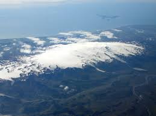

Eyjafjallajokull is located in Southwestern Iceland, specifically at ~63.6N, ~19.6W
It erupted sporadically from March 20, 2010 to June 23, 2010
It erupts every ~100 years.
Most electricity created in the area around Eyjafjallajökull comes from:
Some other natural resources not as useful in generating electricity include:
In Iceland, almost no electricity is made from nonrenewable resources.
Some nonrenewable resources include:
The border between the plates is a divergent plate boundry, causing magma to come up. This is due to lower density magma rising.
There were no deaths from the eruption, but there were damages to properties and fields. In the short term it stopped air traffic. In the long term, it increased touring and caused respiratory issues to the citizens.
There weren't many warning systems in place for the eruption. They now have seismic monitors for the volcano.
Nowadays, people will know when it will erupt ahead of time.